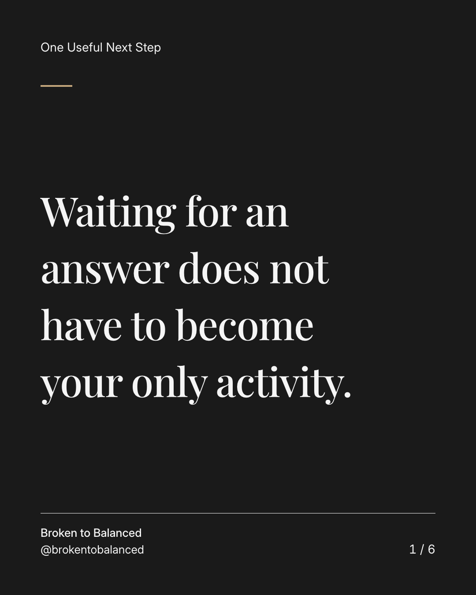
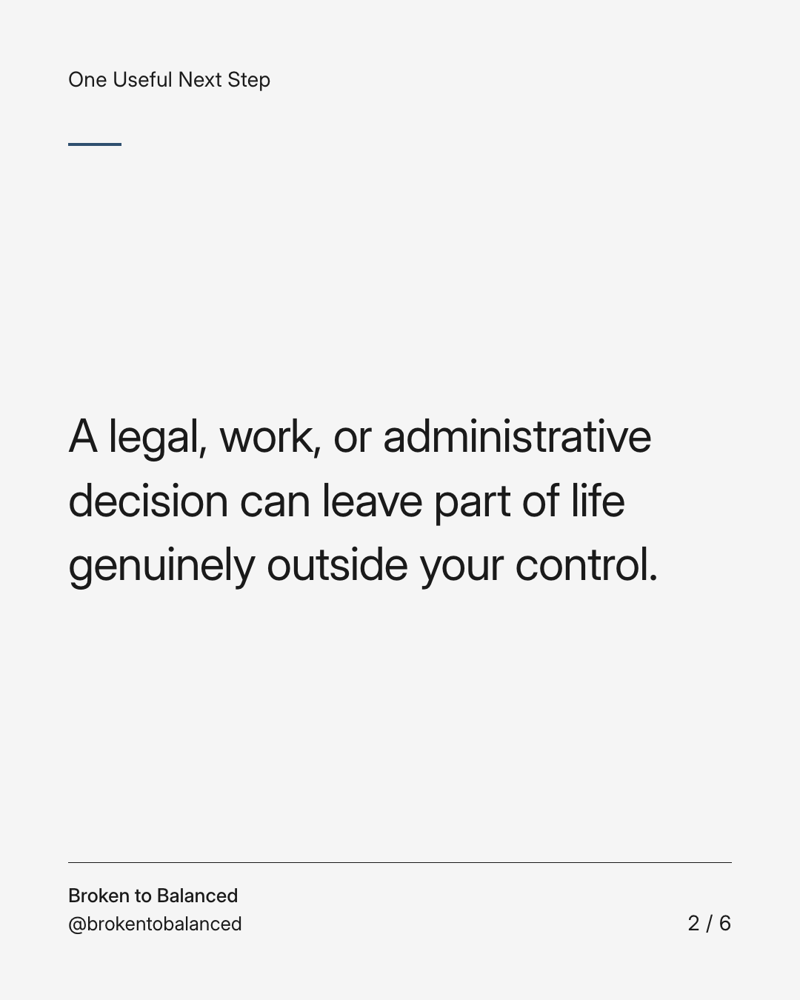
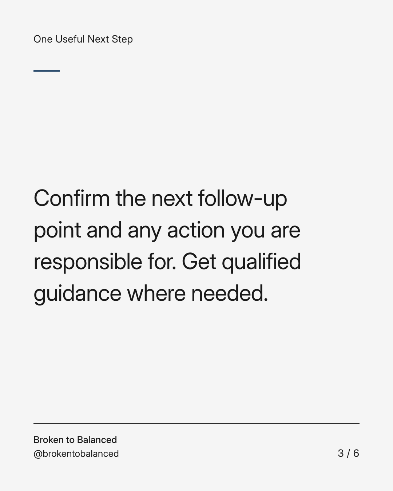
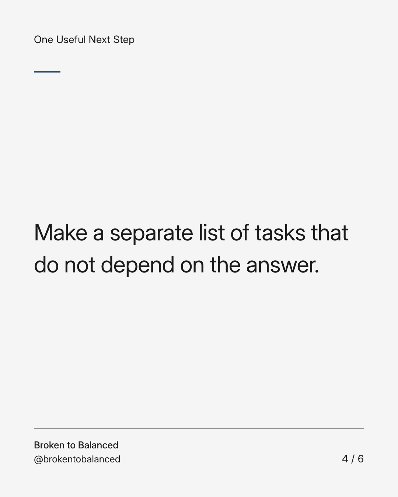
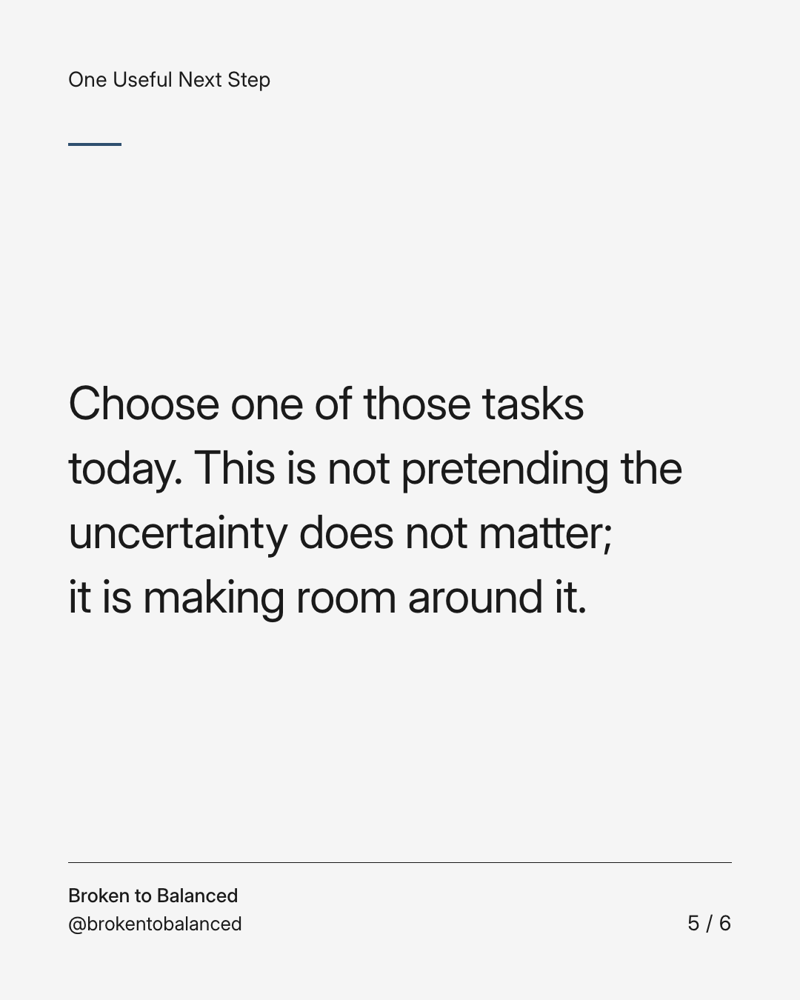
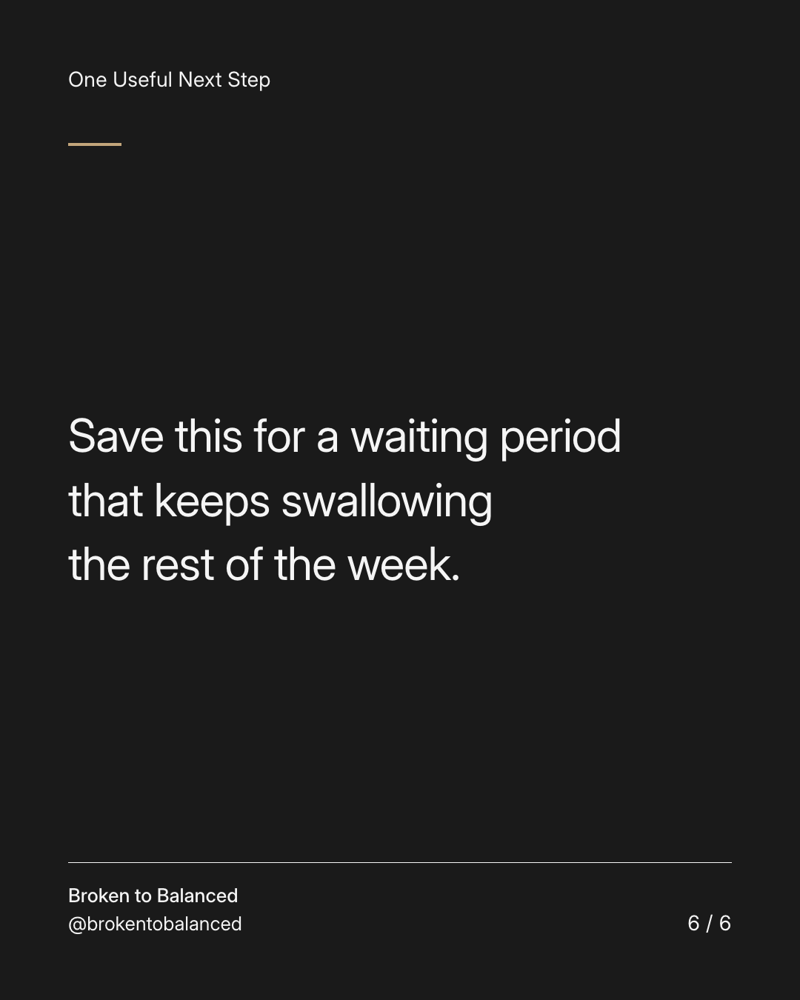

Exact text and accessibility text
Waiting for an answer does not have to become your only activity.
Slide 1 of 6. Waiting for an answer does not have to become your only activity.


Exact text and accessibility text
A legal, work, or administrative decision can leave part of life genuinely outside your control.
Slide 2 of 6. A legal, work, or administrative decision can leave part of life genuinely outside your control.


Exact text and accessibility text
Confirm the next follow-up point and any action you are responsible for. Get qualified guidance where needed.
Slide 3 of 6. Confirm the next follow-up point and any action you are responsible for. Get qualified guidance where needed.


Exact text and accessibility text
Make a separate list of tasks that do not depend on the answer.
Slide 4 of 6. Make a separate list of tasks that do not depend on the answer.


Exact text and accessibility text
Choose one of those tasks today. This is not pretending the uncertainty does not matter; it is making room around it.
Slide 5 of 6. Choose one of those tasks today. This is not pretending the uncertainty does not matter; it is making room around it.


Exact text and accessibility text
Save this for a waiting period that keeps swallowing the rest of the week.
Slide 6 of 6. Save this for a waiting period that keeps swallowing the rest of the week.
Exact caption
Plain-text fallback: select and copy the caption.